Wavelet-Based Nonlinear ARDL (W-NARDL) for Python — a comprehensive library implementing wavelet denoising, asymmetric cointegration testing, dynamic multipliers, and publication-quality econometric analysis.
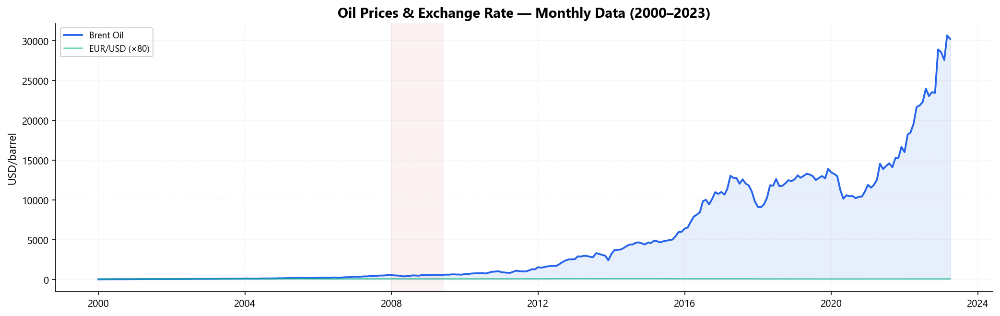
Everything you need for nonlinear cointegration analysis in one package
Haar à Trous non-decimated wavelet transform (paper method) plus PyWavelets SWT/DWT integration with Donoho thresholding.
Full nonlinear ARDL with asymmetric decomposition, automatic lag selection (AIC/BIC/HQ), and grid or quick search modes.
Pesaran-Shin-Smith (2001) bounds F-test for cointegration with asymptotic critical values for Cases I–V.
Wald tests for long-run and short-run symmetry following Shin et al. (2014).
Cumulative dynamic multipliers with bootstrap confidence intervals and long-run multipliers via delta method.
Two-step ECM estimation with speed of adjustment, half-life computation, and stability checks.
Breusch-Godfrey, Breusch-Pagan, Jarque-Bera, Ramsey RESET, CUSUM, CUSUMSQ — all in one call.
Publication-quality visualizations: scalograms, multiplier curves, residual panels, coefficient comparisons.
Generate publication-ready tables in LaTeX, HTML, and rich console formats for academic papers.
# Install from PyPI pip install wavenardl # Or install from source pip install git+https://github.com/merwanroudane/wavenardl.git
from wavenardl import NARDL, pss_f_test, symmetry_test import pandas as pd # Load your data data = pd.read_csv('economic_data.csv') # Define NARDL model with asymmetric exchange rate model = NARDL( data=data, formula="oil ~ exrate + cpi + Asymmetric(exrate)", maxlag=4, criterion='BIC', case=3, ) # Estimate results = model.fit(mode='grid', verbose=True) results.summary() # Cointegration test pss = pss_f_test(results, case=3) print(pss) # Symmetry test sym = symmetry_test(results) print(sym)
from wavenardl import WaveletNARDL # W-NARDL with Haar à Trous denoising (paper method) wmodel = WaveletNARDL( data=data, formula="oil ~ exrate + Asymmetric(exrate)", maxlag=4, wavelet_method='htw', n_levels=5, ) # Fit and compare with standard NARDL results = wmodel.fit(mode='grid', fit_original=True) results['comparison'].summary()
This section demonstrates a complete W-NARDL analysis examining the asymmetric exchange rate pass-through to crude oil prices, following Jammazi, Lahiani & Nguyen (2015).
The complete executable Jupyter notebook is available at wavenardl_full_example.ipynb on GitHub.
We analyze monthly economic data from 2000 to 2023, examining the relationship between Brent crude oil prices, the EUR/USD exchange rate, and the US Consumer Price Index. The scatter plot (Panel C) clearly reveals asymmetric co-movement — the slope differs between exchange rate appreciations and depreciations.
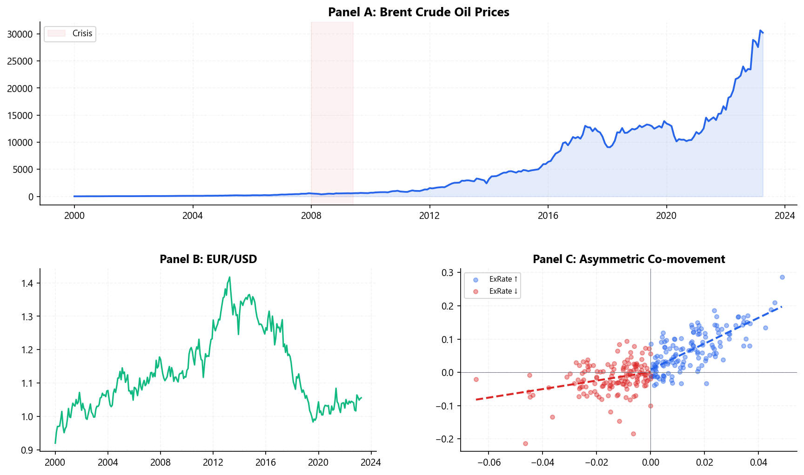
The Haar à Trous wavelet transform (HTW) decomposes the signal into smooth and detail coefficients. Donoho's universal threshold is applied to remove noise while preserving the underlying dynamics.
from wavenardl import HaarATrousWavelet, plot_wavelet_decomposition htw = HaarATrousWavelet(n_levels=5, threshold_method='soft') analysis = htw.full_analysis(data['oil'].values, name='Brent Oil') # Decomposition levels, noise estimation, threshold print(f"Noise σ: {analysis['sigma']:.6f}") print(f"Threshold λ: {analysis['threshold']:.6f}") plot_wavelet_decomposition(analysis)
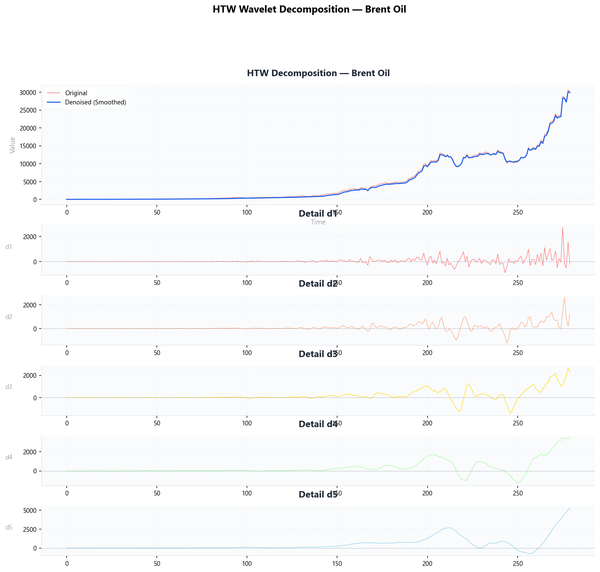
Comparing three wavelet denoising methods: HTW (paper method), SWT, and DWT:
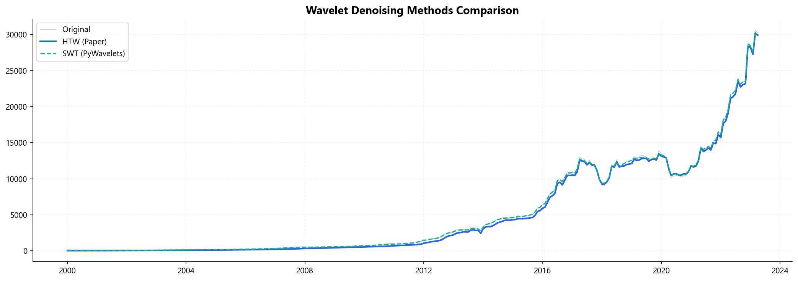
Following Shin et al. (2014), we decompose the exchange rate into positive and negative partial sums to capture asymmetric dynamics:
from wavenardl import partial_sum_decomposition x_pos, x_neg = partial_sum_decomposition(data['exrate'].values)
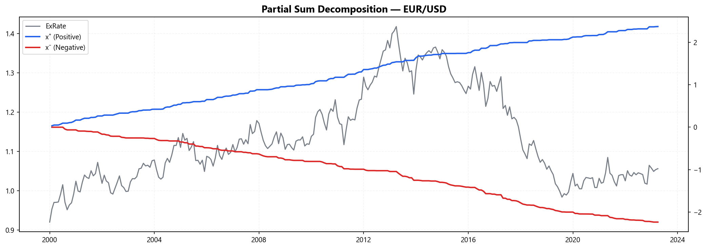
The NARDL model is estimated with automatic lag selection via BIC grid search. The coefficient chart uses color coding to show significance levels.
model = NARDL(
data=data,
formula="oil ~ exrate + cpi + Asymmetric(exrate) + deterministic(crisis)",
maxlag=4,
criterion='BIC',
case=3,
)
results = model.fit(mode='grid')
results.summary()
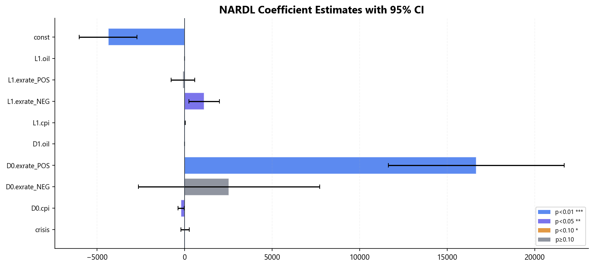
The Pesaran-Shin-Smith (2001) bounds test checks for cointegration by testing the joint significance of the lagged level variables. The F-statistic is compared against I(0) and I(1) critical value bounds.
from wavenardl import pss_f_test, bounds_test_table pss = pss_f_test(results, case=3) print(pss) print(bounds_test_table(pss))
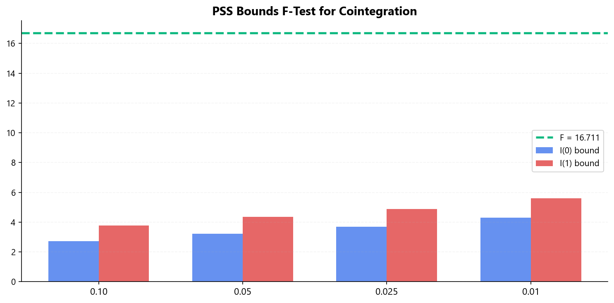
Long-run multipliers measure the total equilibrium effect: Li = −θi/ρ. Standard errors are computed via the delta method.
from wavenardl import compute_long_run_multipliers, long_run_summary lr = compute_long_run_multipliers(results) long_run_summary(results)
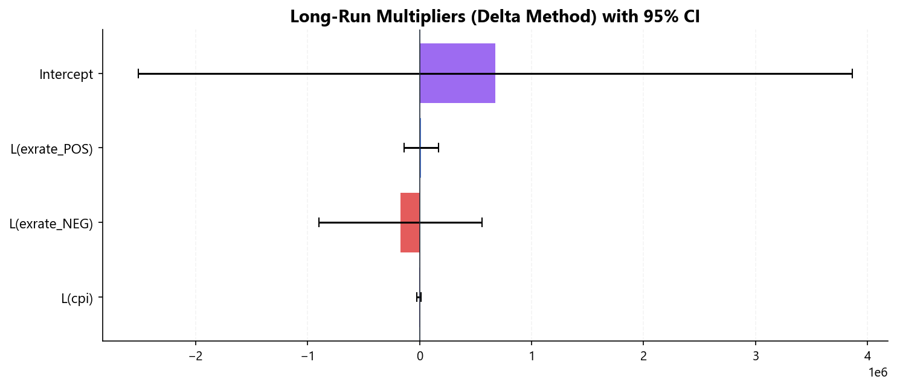
The cumulative dynamic multipliers trace the adjustment path over time. As h → ∞, they converge to the long-run multipliers. Bootstrap confidence intervals test whether the asymmetry is statistically significant.
from wavenardl import DynamicMultipliers, bootstrap_multipliers, plot_multipliers dm = DynamicMultipliers(results, horizon=80) dm.summary() # With bootstrap CI mpsi = bootstrap_multipliers(results, horizon=60, replications=100) plot_multipliers(mpsi, dep_var='oil')
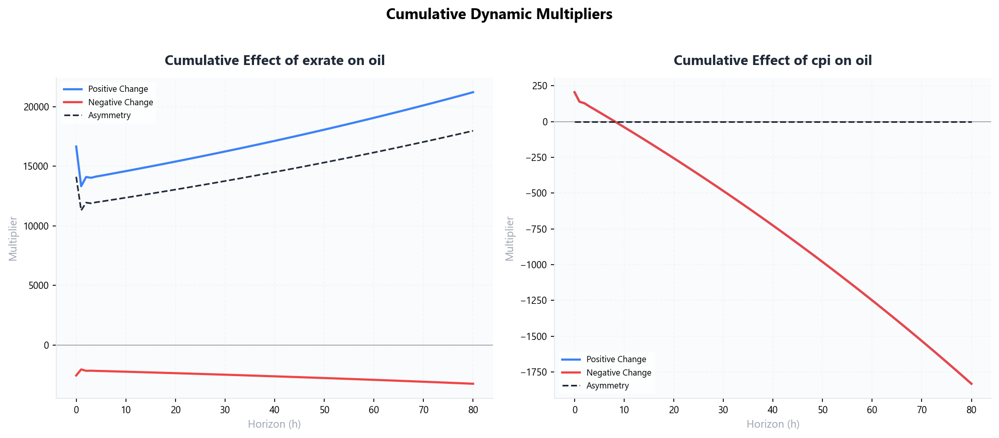
A comprehensive battery of diagnostic tests validates the model assumptions. The 4-panel residual diagnostic plot and CUSUM/CUSUMSQ stability tests ensure model reliability.
from wavenardl import run_all_diagnostics, diagnostics_summary from wavenardl import plot_residual_diagnostics, plot_cusum diagnostics_summary(results) plot_residual_diagnostics(results) plot_cusum(results)
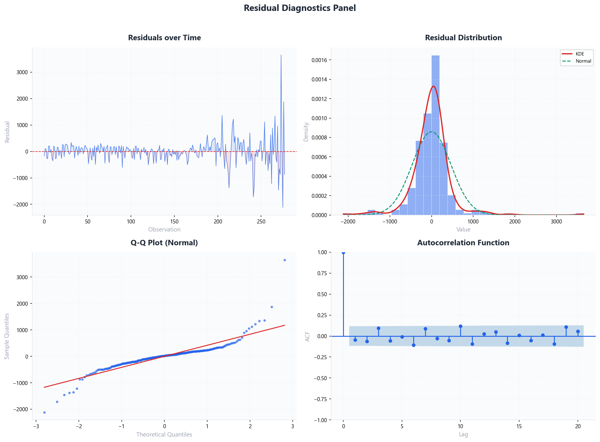
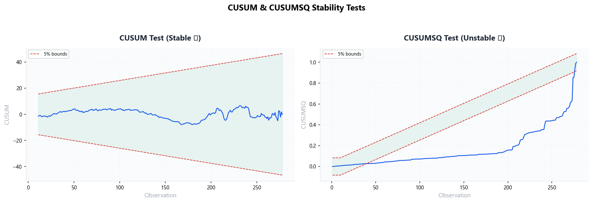
The W-NARDL model combines wavelet denoising with NARDL estimation. It denoises all series before estimation, capturing the true underlying relationships. Side-by-side comparison shows the impact of denoising on coefficient estimates.
from wavenardl import WaveletNARDL, plot_coefficient_comparison wmodel = WaveletNARDL( data=data, formula=formula, maxlag=4, wavelet_method='htw', n_levels=5, ) wr = wmodel.fit(mode='grid', fit_original=True) wr['comparison'].summary() plot_coefficient_comparison(wr['original'], wr['wavelet'])
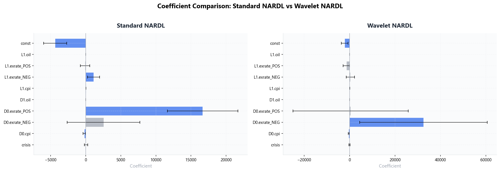
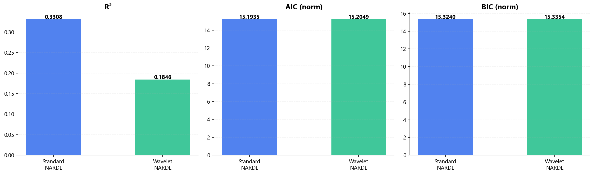
Export results directly to LaTeX for academic papers, HTML for reports, or styled console output.
from wavenardl import summary_table, comparison_table, diagnostics_table # LaTeX output latex = summary_table(results, format='latex') print(latex) # HTML output html = summary_table(results, format='html') # Comparison table comp = comparison_table(wr['original'], wr['wavelet'], format='latex')
The complete executable notebook with all 31 code cells and outputs is available on GitHub.
.fit(mode='grid') → NARDLResults |
Results: .summary(), .coefficients, .residuals, .fitted_values
dict with 'wavelet', 'original', 'comparison', 'wavelet_analyses'
.decompose(), .denoise(), .full_analysis()| Function | Description |
|---|---|
plot_wavelet_decomposition() | HTW decomposition: original vs denoised + detail levels |
plot_scalogram() | Wavelet power spectrum heatmap |
plot_multipliers() | Dynamic multiplier curves with bootstrap CI |
plot_residual_diagnostics() | 4-panel residual diagnostic plot |
plot_cusum() | CUSUM and CUSUMSQ stability plots |
plot_lag_criteria() | Information criteria across lag configurations |
plot_coefficient_comparison() | Side-by-side coefficient charts |
Jammazi, R., Lahiani, A., & Nguyen, D. K. (2015). A wavelet-based nonlinear ARDL model for assessing the exchange rate pass-through to crude oil prices. Journal of International Financial Markets, Institutions and Money, 34, 173-187.
Shin, Y., Yu, B., & Greenwood-Nimmo, M. (2014). Modelling asymmetric cointegration and dynamic multipliers in a nonlinear ARDL framework. Festschrift in Honor of Peter Schmidt, 281-314.
Pesaran, M. H., Shin, Y., & Smith, R. (2001). Bounds testing approaches to the analysis of level relationships. Journal of Applied Econometrics, 16(3), 289-326.
Narayan, P. K. (2005). The saving and investment nexus for China. Applied Economics, 37(17), 1979-1990.
Donoho, D. L. (1995). De-noising by soft-thresholding. IEEE Transactions on Information Theory, 41, 613-627.